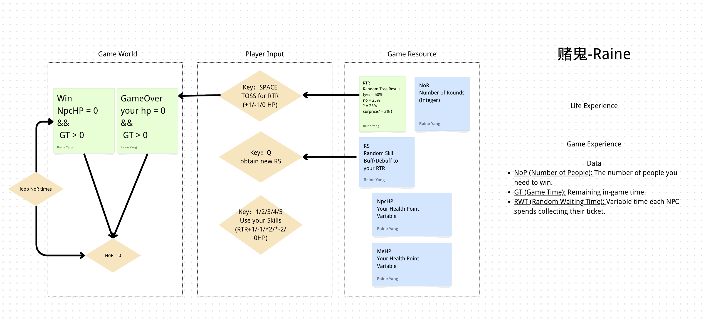
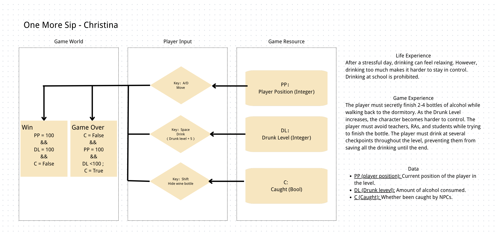
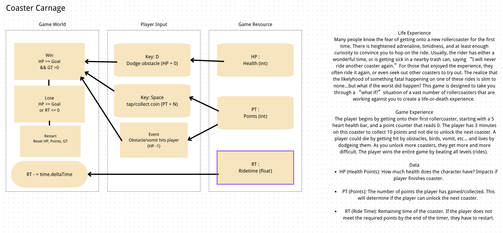
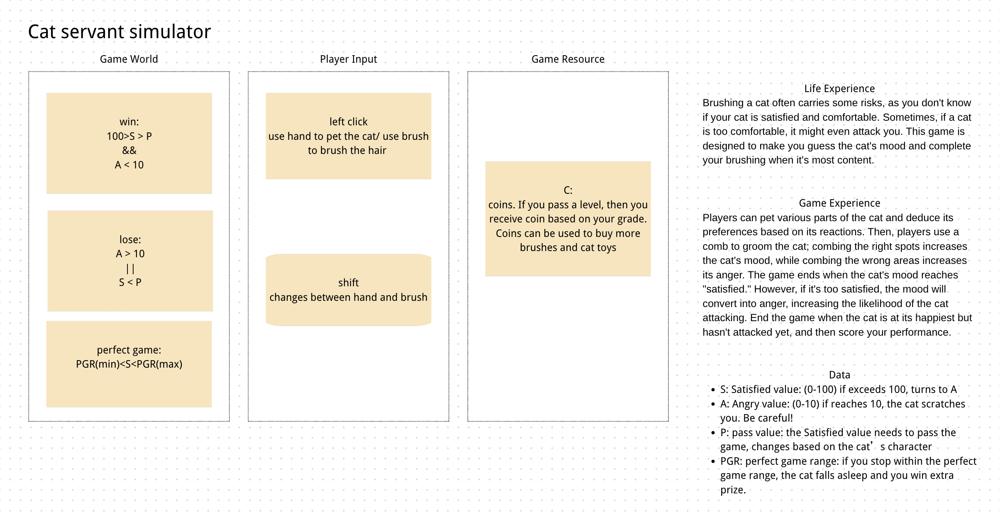

P00 · 教师同步项目
Anxiety In Lines
Repo：xingchen-ian/AnxietyInLines
生活经验：排队中的不确定等待、有限控制和封闭社交压力。
核心机制：NoP / GT / RWT 驱动的排队管理与协商。
研究价值：目前最完整地展示了“生活经验 → 数据化抽象 → 原型”的链路。
持续汇总学生项目、AI 协作日志、系统设计图与研究问题。
本页面把课堂中的游戏项目整理为一个持续更新的研究现场。每个项目都由生活经验出发，经由系统设计图、GitHub 原型和 `agent-development-log.md` 记录，逐步形成可分析的案例材料。
观察学生如何把生活经验拆成 Game World、Player Input、Game Resource、Data 与胜负条件。
检查设计变量是否进入代码，机制是否被实现，以及从设计图到原型时发生了哪些改变。
记录学生如何与 AI 协作，AI 是代码助手、设计合作者、反思镜子，还是造成设计偏移的来源。
基于 analysis-framework.md 的分类编码，用于跨项目比较与案例选择。
这些问题会随着学生项目推进不断收敛，并最终进入论文框架。
学生是否能从真实生活经验出发，选择情感经验路径或领域学习路径，并转化为变量、输入、规则和反馈？
从设计图到可玩原型时，核心情感是否被保留？哪些项目发生了机制漂移？
AI 主要帮助实现、修复、扩展，还是影响了学生对原始生活经验的理解和设计选择？
学生是否能从变量和领域因素中推导 2～3 个递进挑战，而不是临时想几个关卡？
先以系统设计图为基础，后续将继续补充 repo 检查和开发日志分析。
Repo：xingchen-ian/AnxietyInLines
生活经验：排队中的不确定等待、有限控制和封闭社交压力。
核心机制：NoP / GT / RWT 驱动的排队管理与协商。
研究价值：目前最完整地展示了“生活经验 → 数据化抽象 → 原型”的链路。

Repo：raineraine-go-away/Raine-nyu-2026-summer-game
生活经验：陷在并非自己设计的规则系统里，越用力越无法脱身，最终通过停止强行解决获得释放。
核心机制：五行房间解谜：寻找规则、遵循规则、改变规则，最后进入“无为”等待。
研究价值：这是一个重要的设计方向变化案例：当前 repo 已从 Canva 上的“赌鬼 / Gambler”转向“无为 / Wuwei”。

生活经验：压力后的饮酒放松与失控风险，以及校园禁令。
核心机制：Drunk Level、位置、躲避与被抓状态。
研究价值：适合观察“控制感下降”如何被转成操作难度和风险系统。

Repo：26SM_Demo / Assignment3 / The Darkroom
生活经验：照片无法捕捉所见，曝光让现实被改变或重新显现。
核心机制：曝光状态、光轨路径列表、轨迹持续时间与倒计时。
研究价值：很强的感知经验转机制案例，可作为重点案例候选。

Repo：syc9459-ui/Coaster-Carnage-
生活经验：第一次坐过山车的恐惧、肾上腺素、好奇与最坏想象。
核心机制：HP、Points、Ride Time、躲避障碍与收集。
研究价值：可观察情感是否被保留，还是滑向通用躲避收集玩法。

生活经验：照顾猫时需要读取反馈，过度安抚也可能转化为危险。
核心机制：Satisfaction、Anger、Pass threshold、Perfect range。
研究价值：很适合分析"关怀、风险、阈值和适时停止"的情感结构。

生活经验：看似简单的预制餐小店，在多任务同时到来时变成压力场。
核心机制：Pending Tasks、Customer Patience、Mess Count、Closing Timer。
研究价值：很适合分析"并发任务造成的焦虑"和牺牲选择。
分析框架已更新至 7 月：PATH / LE / EM / ME / DATA / DOMAIN / CHAL / AI / REF / PLAY 编码体系。
逐个检查 GitHub repo，确认是否包含 `README.md`、`PROJECT_INDEX.md`、`agent-development-log.md`；收集 P05 / P06 仓库。
对照系统图和代码，记录哪些变量被实现、哪些机制被改写或消失。
分析 `agent-development-log.md`，标注 AI 的角色：代码实现、机制建议、debug、文档整理或反思引导。
形成案例矩阵，比较情感保真、机制漂移、教学难点和方法论改进点。
2026 暑期夏令营落地领域学习路径，62 个学生作品可在线试玩，形成独立的研究证据源。
基于 GitHub repo、开发日志和系统图的阶段性研究判断。
当前 repo 已转为“无为 / Wuwei”，与 Canva 的“赌鬼 / Gambler”不一致。价值在于研究概念漂移和 AI 对主题字段的推断。
实现进展明显：17 个脚本、图片和音频都已进入 repo。但开发日志只有初始记录，过程证据不足。
最成熟案例：51 个脚本、72 条交互日志、多份设计文档和音画系统。适合作为主案例深入分析。
早期原型清楚，日志记录了脚手架、bug 修复和“车厢向前”架构变化。反思显示该变化强化了过山车情感。